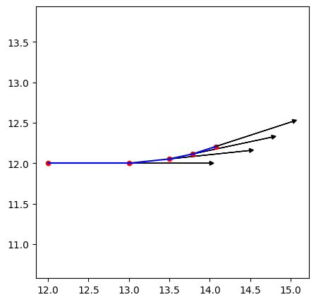
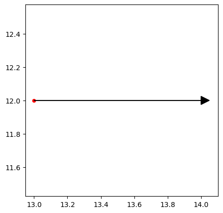
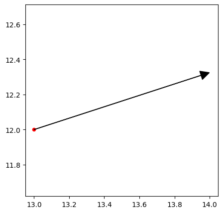

Le robot agit#
Le capteur pour suivre sa propre trajectoire : l’odométrie#
Jusqu’ici, nous avons vu la position et l’orientation du robot à différents instants. Voyons maintenant cela à travers le temps. Pour ce faire, on va simplement montrer
robot = reinit_robot()
ax = plt.axes()
positions = [] # Contient les positions d'arrivées
positions.append(robot.position)
robot.draw(ax, with_orientation=True)
positions.append(robot.move(10))
robot.draw(ax, with_orientation=True)
robot.turn(np.pi / 3)
positions.append(robot.move(5))
robot.draw(ax, with_orientation=True)
robot.turn(np.pi / 3)
positions.append(robot.move(3))
robot.draw(ax, with_orientation=True)
robot.turn(np.pi / 3)
positions.append(robot.move(3))
robot.draw(ax, with_orientation=True)
for position_1, position_2 in zip(positions[:-1], positions[1:]):
print(position_1, position_2)
# ax.axline((position_1.x, position_1.y), (position_2.x, position_2.y))
# ax.plot(position_1.x, position_1.y, position_2.x, position_2.y, c='k')
ax.plot([position_1.x, position_2.x], [position_1.y, position_2.y], color="blue")
# for position in positions:
# ax.scatter([position.x], [position.y], color='red', marker='o', s=20)
plt.show()
(12,12) (13.0,12.0)
(13.0,12.0) (13.497260947684136,12.052264231633826)
(13.497260947684136,12.052264231633826) (13.790705227904278,12.114637738879154)
(13.790705227904278,12.114637738879154) (14.076022182792824,12.207342837191637)

positions
[Point(12, 12),
Point(13.0, 12.0),
Point(13.497260947684136, 12.052264231633826),
Point(13.790705227904278, 12.114637738879154),
Point(14.076022182792824, 12.207342837191637)]
Comment mesurer suivre la trajectoire du robot quand on est sur le robot ? Il suffit de
Comment le robot se déplace ?#
Il peut tourner autour de lui-même et il peut avancer tout droit. C’est le modèle le plus simple et ça permet d’atteindre n’importe quel point d’un plan.
Et si le robot avançait ? La fonction pour faire avancer le robot est
Robot.move(duration). Regardons ce qui s’est passé.
On voit que le robot s’est déplacé dans la direction de la flèche. Mais de combien s’est-il déplacé ? Il s’est à peine déplacé d’1 cm en 10 secondes. En fait, le déplacement de distance \(d\) dépend de la vitesse de déplacement \(\vec{v}\), qui est un paramètre du robot, et de la durée de déplacement \(t\), qui est aussi un paramètre. Par définition, on a \(d = \|\vec{v}\| * t\). C’est le modèle le plus simple où la vitesse est constante. La réalité est bien différente.
Par défaut, la vitesse est de
Robot.velocity.On peut redéfinir la vitesse par
Robot.set_velocity(velocity).Le robot peut aussi tourner autour de lui-même. Là aussi, la rotation dépend de la vitesse de rotation et de la durée de rotation.
